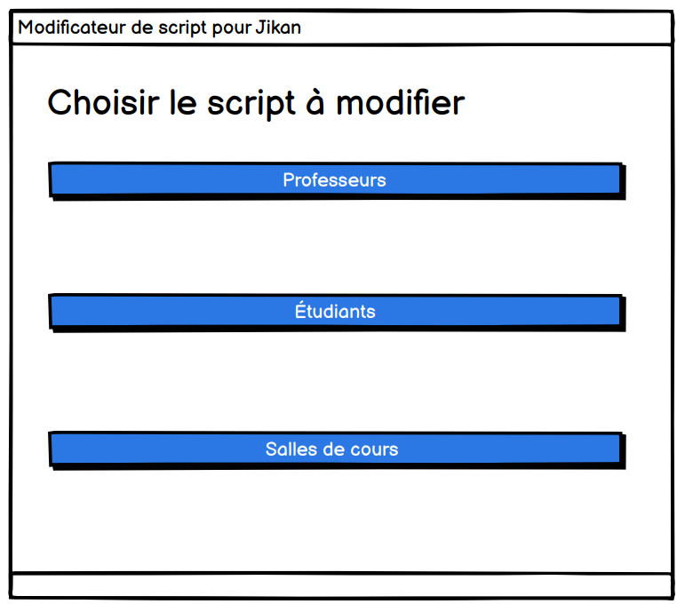
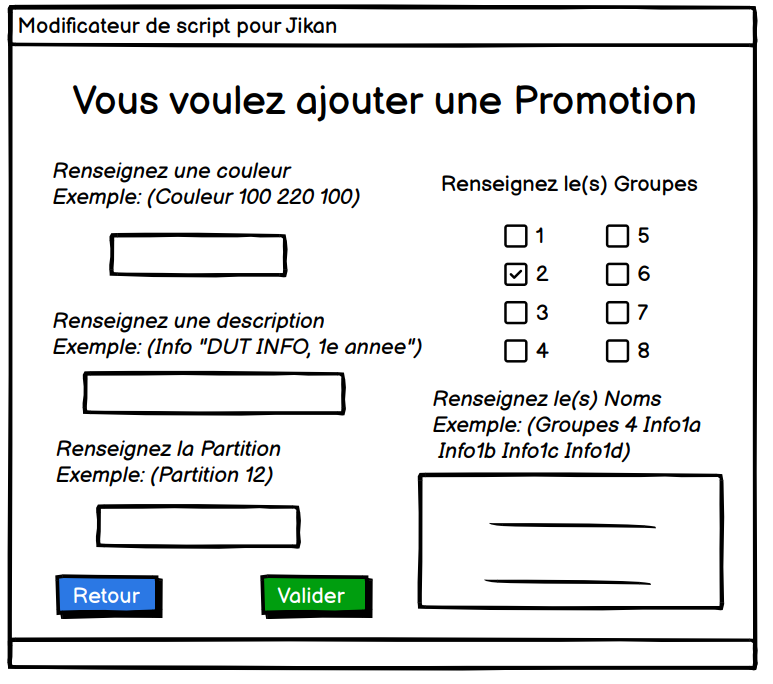
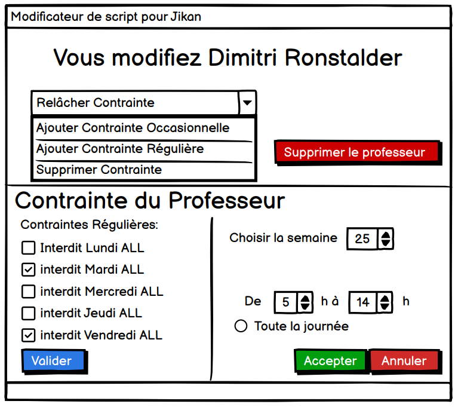
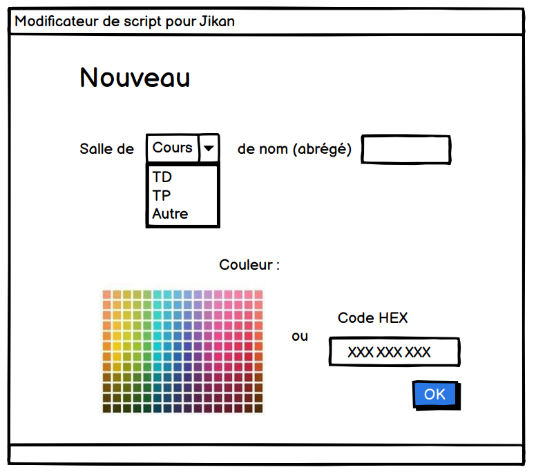

Aperçu du projet



Contexte & rôle dans le projet
Dans ce projet de semestre, nous avions pour mission de créer une application de gestion d'emploi du temps. Le travail était réparti entre les membres du groupe. Notre partie consistait à gérer les groupes, les professeurs et les salles - c'est-à-dire les entités métiers autour de l'attribution des ressources dans le planning.
La maquette initiale du projet a été réalisée avec Balsamiq, ce qui nous a permis de définir l'ergonomie et les écrans avant de passer au développement.
Technologies utilisées
Fonctionnalités de notre module
- Gestion des groupes : création, modification, suppression des groupes d'étudiants / classes.
- Gestion des professeurs : CRUD des enseignants impliqués dans le planning.
- Gestion des salles : CRUD des salles disponibles pour les cours.
- Association ressources-planning : possibilité d'attribuer un professeur et une salle à un cours ou créneau.
- Interface maquette-to-développement : correspondance entre ce que nous avions défini dans Balsamiq et ce qui a été codé.
Défis techniques rencontrés
- Alignement entre maquette & développement : respecter les écrans définis dans Balsamiq.
- Gestion de la relation entre entités : comment lier groupes, professeurs, salles, les contraintes (disponibilités, conflits).
- Validation des données : vérifier que les données saisies sont cohérentes (ex : pas de double attribution de salle).
- Intégration équipe : coordination du travail, fusion du code, gestion des conflits git.
Compétences développées
Modélisation de données
Entités, relations entre groupes / professeurs / salles
Prototypage
Création de maquettes Balsamiq avant le codage
Développement modulaire
Implémentation d'un module indépendant au sein d'une application plus large
Travail en équipe
Répartition des modules, intégration du code, communication
Conclusion & apprentissages
Ce projet m'a aidé à comprendre comment structurer un module dans une application plus vaste, à faire correspondre une maquette (Balsamiq) à un rendu fonctionnel, et à modéliser des relations entre entités critiques pour un planning. Bien que je ne contrôle pas tous les modules (planning global, interface complète), cette partie “gestion des ressources” m'a donné une bonne base de compréhension sur la conception back-end et front-end.